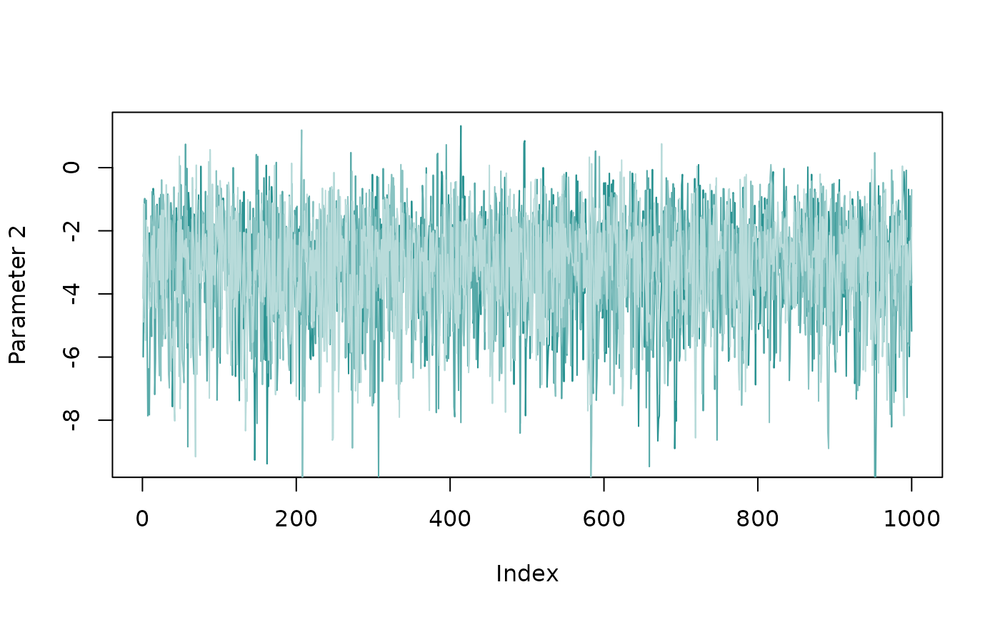

Introduction
bisonR is an R package for running social network analyses in the BISoN framework. BISoN models consist of two main stages: 1) fitting an edge weight model, capturing uncertainty in social network edges; and 2) propagating this uncertainty through subsequent analyses such as regressions. In this short tutorial we’ll cover how to fit edge weight models to a simulated dataset, and show how the fitted edge weight model can be used to run dyadic and nodal regression analysis, as well as non-random edge weight tests.
Before beginning, we’ll load in the bisonR package using
library(bisonR), and we’ll also bring in dplyr
to help with data wrangling. If you don’t already have
bisonR installed, you can install it from Github using the
following code:
remotes::install_github("JHart96/bisonR")
library(bisonR)
#> Loading required package: cmdstanr
#> This is cmdstanr version 0.6.0
#> - CmdStanR documentation and vignettes: mc-stan.org/cmdstanr
#> - CmdStan path: /home/runner/.cmdstan/cmdstan-2.32.2
#> - CmdStan version: 2.32.2
library(dplyr)
#>
#> Attaching package: 'dplyr'
#> The following objects are masked from 'package:stats':
#>
#> filter, lag
#> The following objects are masked from 'package:base':
#>
#> intersect, setdiff, setequal, unionWe will use the simulate_bison_model() function from
bisonR to simulate some observation data. This dataframe is
an example of the format that bisonR uses. Each row corresponds to an
observation (such as an association within a sampling period of a dyad
or a count of interactions between a dyad). Additional
observation-level, dyad-level, or node-level factors can also be
included.
sim_data <- simulate_bison_model("binary", aggregated = FALSE)
df <- sim_data$df_sim
head(df)
#> event node_1_id node_2_id age_diff age_1 age_2 location duration
#> 1 0 1 2 1.449423 19.29828 17.84886 4 1
#> 2 1 1 2 1.449423 19.29828 17.84886 3 1
#> 3 0 1 2 1.449423 19.29828 17.84886 5 1
#> 4 1 1 2 1.449423 19.29828 17.84886 3 1
#> 5 0 1 3 -3.950082 19.29828 23.24837 4 1
#> 6 0 1 3 -3.950082 19.29828 23.24837 3 1Edge Models
Depending on the type of data being analysed, different edge models
should be used. See the BISoN introduction vignette for
more details on this. In this example we’re using binary data, where
events can either occur (1) or not occur (0) in a particular sampling
period. In our dataframe this corresponds to event = 1 or
event = 0.
The bisonR framework is fully Bayesian, and therefore specifying
priors is a key part of any analysis. Priors can be tricky to set, and
techniques for choosing good priors are outside the scope of this
tutorial. You can see which priors need to be set for a particular model
using the get_default_priors() function. These are only
defaults and should almost always be changed.
priors <- get_default_priors("binary")
priors
#> $edge
#> [1] "normal(0, 2.5)"
#>
#> $fixed
#> [1] "normal(0, 2.5)"
#>
#> $random_mean
#> [1] "normal(0, 1)"
#>
#> $random_std
#> [1] "half-normal(1)"
#>
#> $zero_prob
#> [1] "beta(1, 1)"The priors object gives a list of priors on the parameters for the
edge model: the edge weights, additional fixed effects, and random
effect parameters. The prior_check() function can be used
to plot the prior distributions, and we’ll use this to check that we’re
happy with the priors:
prior_check(priors, "binary")
The priors should encode our prior beliefs about likely values of the parameters. For demonstration purposes let’s say we expect edge weights to be concentrated lower, towards zero. We can modify the priors on edge weight like this:
priors$edge <- "normal(-1, 2.5)"
prior_check(priors, "binary")
Depending on the biology, this might be more like what we want to
see. Now we’ve set our priors and we’re happy with them, we can fit the
edge model using the bison_model() function. This is one of
the main functions of the bisonR package and has a lot of
functionality. The main thing to worry about is how to define the edge
weight model formula. The formula are designed to be familar to those
who have used lm, lme4, brms, and
other regression packages. The main difference here is that we need to
include some measure of observation effort to get accurate estimates of
edge weight uncertainty.
In bisonR, the left hand side of the ~ describes the
sampling data, and uses the (event | duration) notation. In
this notation, event corresponds to the name of the column
in the dataframe that represents the measure of social events, such as 1
and 0 in the binary model, or frequencies 0, 1, 2, … in the count model.
If using an unaggregated dataframe, the duration
corresponds to the durations of each observation. In our case this is
fixed, but this will depend on the data at hand.
The right hand side of the ~ describes the predictors
that are associated with social events. In the standard BISoN model this
is primarily the edge weight that we use to build the network, but this
can also include additional effects such as age, sex, or even
observation-level factors such as location, time of day, or weather, to
name a few. Including additional effects will change the interpretation
of edge weights, but could be useful if interested in the social network
once some factors have been controlled for. Note the edge
weights don’t need to be included, and you could use bisonR to estimate
generative effects in a network. In this example we’ll keep things
simple and just use edge weight as the only predictor. This is done
using the dyad(node_1_id, node_2_id) notation.
node_1_id and node_2_id represent the nodes
corresponding to each individual in the network, and need to be stored
as factors in the dataframe. They don’t need to be IDs, and could be
individual names, as long as they’re stored as factors. Now we
understand the basics of the formula notation, we can now fit the edge
weight model:
fit_edge <- bison_model(
(event | duration) ~ dyad(node_1_id, node_2_id),
data=df,
model_type="binary",
priors=priors
)
#> Running MCMC with 4 parallel chains...
#>
#> Chain 2 finished in 1.1 seconds.
#> Chain 1 finished in 1.2 seconds.
#> Chain 3 finished in 1.1 seconds.
#> Chain 4 finished in 1.1 seconds.
#>
#> All 4 chains finished successfully.
#> Mean chain execution time: 1.1 seconds.
#> Total execution time: 1.5 seconds.Depending on your dataset this can take anywhere between a few tenths of a second and several hours. In particular if you have a large dataset and no observation-level predictors, it’s probably a good idea to use the aggregated version of the model where all observations per dyad are collapsed to a single row. This will speed up model fitting considerably.
Once the model has fitted, we need to check that the MCMC algorithm
has behaved correctly. Often if there’s a major problem, the
bison_model() function itself will have triggered warning
messages above. But even if everything is silent, it’s still worth
checking the traceplots to check the MCMC chains have converged. The
chains should be well-mixed and look something like a fuzzy caterpillar.
We can check for this using the plot_trace() function:
plot_trace(fit_edge, par_ids=2)
If we’re satisfied that the MCMC algorithm has done its job properly,
then it’s time to see if the same is true for the model. One way to do
this, among many others, is to check the predictions from the fitted
model against the real data. This can be done using the
plot_predictions() function. If the real data are within
the ensemble of predictions from the model, then we have a little more
faith that the model is capturing at least some important properties of
the data. The statistical model implies a range of predictions that we
can extract over multiple draws, the number of which can be set using
the num_draws argument.
plot_predictions(fit_edge, num_draws=20, type="density")
The predictions from the model are shown in blue and the real data
are shown in black. Ideally the blue lines should be distributed around
the black line, indicating the real data are among the possible
predictions of the model. It’s usually a good idea to run multiple
predictive checks to ensure the model has captured various important
characteristics of the data. Another type of check supported by
bisonR is a comparison against point estimates of edge
weights:
plot_predictions(fit_edge, num_draws=20, type="point")
This plot shows BISoN estimates denoted by an interval, where the 90% probability interval is shown by the thin line, and the 50% probability interval is shown by the thicker blue line. We should see a roughly linear relationship between point estimates and BISoN estimates, though at the extremes the BISoN estimates are likely to be less extreme unless there are sufficient data. This is by design, as BISoN uses a full probabilistic model of social events to generate its estimates, and will be sceptical of extreme values without sufficient evidence.
Now we’ve conducted two basic diagnostic checks of the edge weight
model, we can start to trust what it’s telling us. To see a summary of
edge weights and their credible intervals, we can use the
summary() function:
summary(fit_edge)
#> === Fitted BISoN edge model ===
#> Data type: binary
#> Formula: (event | duration) ~ dyad(node_1_id, node_2_id)
#> Number of nodes: 10
#> Number of dyads: 45
#> Directed: FALSE
#> === Edge list summary ===
#> median 5% 95%
#> 1 <-> 2 0.453 0.131 0.823
#> 1 <-> 3 0.045 0.002 0.328
#> 1 <-> 4 0.111 0.004 0.690
#> 1 <-> 5 0.459 0.129 0.823
#> 1 <-> 6 0.306 0.047 0.735
#> 1 <-> 7 0.742 0.133 0.988
#> 1 <-> 8 0.110 0.004 0.697
#> 1 <-> 9 0.736 0.140 0.987
#> 1 <-> 10 0.840 0.353 0.989
#> 2 <-> 3 0.040 0.002 0.253
#> 2 <-> 4 0.109 0.004 0.685
#> 2 <-> 5 0.107 0.004 0.688
#> 2 <-> 6 0.074 0.002 0.496
#> 2 <-> 7 0.184 0.027 0.510
#> 2 <-> 8 0.224 0.033 0.609
#> 2 <-> 9 0.373 0.110 0.704
#> 2 <-> 10 0.704 0.327 0.943
#> 3 <-> 4 0.299 0.044 0.729
#> 3 <-> 5 0.561 0.239 0.852
#> 3 <-> 6 0.757 0.415 0.950
#> 3 <-> 7 0.053 0.002 0.395
#> 3 <-> 8 0.731 0.144 0.985
#> 3 <-> 9 0.841 0.332 0.989
#> 3 <-> 10 0.924 0.648 0.994
#> 4 <-> 5 0.700 0.316 0.939
#> 4 <-> 6 0.887 0.494 0.992
#> 4 <-> 7 0.925 0.634 0.994
#> 4 <-> 8 0.839 0.339 0.991
#> 4 <-> 9 0.846 0.353 0.991
#> 4 <-> 10 0.887 0.476 0.991
#> 5 <-> 6 0.426 0.065 0.875
#> 5 <-> 7 0.699 0.305 0.941
#> 5 <-> 8 0.741 0.138 0.987
#> 5 <-> 9 0.847 0.375 0.989
#> 5 <-> 10 0.738 0.140 0.986
#> 6 <-> 7 0.055 0.002 0.383
#> 6 <-> 8 0.847 0.347 0.990
#> 6 <-> 9 0.729 0.141 0.982
#> 6 <-> 10 0.921 0.638 0.994
#> 7 <-> 8 0.294 0.048 0.729
#> 7 <-> 9 0.700 0.316 0.942
#> 7 <-> 10 0.837 0.350 0.990
#> 8 <-> 9 0.440 0.066 0.882
#> 8 <-> 10 0.840 0.358 0.989
#> 9 <-> 10 0.836 0.343 0.990It can be hard to get an intuitive idea for what’s going on looking
only at a summary table, so this is where it can be useful to visualise
the network too. The plot_network() function does this for
BISoN edge weight models, where uncertainty is shown on edge weights.
Uncertainty is visualised by showing the lower and upper bounds as
overlapping edges in the network.
plot_network(fit_edge, lwd=5)
Non-random Edge Weights
Now that we have a fitted edge weight model we’re happy with, we can
move to downstream analyses. The first of these we’ll consider is the
non-random edge weight analysis, which is a Bayesian version of the
Bejder et al. 1998 test for non-random association. In this analysis we
compare the fitted edge weight model to a null version of the model
where all edges have the same weight. We then use the
model_comparison function to estimate the relative
probabilities of the full edge weight model against the null model:
fit_null <- bison_model(
(event | duration) ~ 1,
data=df,
model_type="binary",
priors=priors
)
#> Running MCMC with 4 parallel chains...
#>
#> Chain 1 finished in 0.6 seconds.
#> Chain 2 finished in 0.6 seconds.
#> Chain 3 finished in 0.6 seconds.
#> Chain 4 finished in 0.6 seconds.
#>
#> All 4 chains finished successfully.
#> Mean chain execution time: 0.6 seconds.
#> Total execution time: 0.7 seconds.
model_comparison(list(non_random_model=fit_edge, random_model=fit_null))
#> Warning: Some Pareto k diagnostic values are too high. See help('pareto-k-diagnostic') for details.
#> Method: stacking
#> ------
#> weight
#> non_random_model 0.755
#> random_model 0.245This shows the relative probabilities of the models in the comparison. In our case the results are conclusive, the network seems to be non-random. It’s likely that this is the case in almost all networks, but you might want to conduct this test anyway.
Regression
One of the most common types of analysis is regression. To demonstrate how regressions can be conducted in bisonR, we’ll first set up a dataframe. For this example let’s use age difference as a predictor of edge weight.
df_dyadic <- df %>%
distinct(node_1_id, node_2_id, age_diff)
df_dyadic
#> node_1_id node_2_id age_diff
#> 1 1 2 1.44942306
#> 2 1 3 -3.95008206
#> 3 1 4 -4.36093459
#> 4 1 5 -1.40360704
#> 5 1 6 -2.76489982
#> 6 1 7 -1.08117574
#> 7 1 8 -0.45627677
#> 8 1 9 -0.53119966
#> 9 1 10 2.54425526
#> 10 2 3 -5.39950512
#> 11 2 4 -5.81035766
#> 12 2 5 -2.85303010
#> 13 2 6 -4.21432288
#> 14 2 7 -2.53059880
#> 15 2 8 -1.90569983
#> 16 2 9 -1.98062272
#> 17 2 10 1.09483219
#> 18 3 4 -0.41085254
#> 19 3 5 2.54647502
#> 20 3 6 1.18518224
#> 21 3 7 2.86890632
#> 22 3 8 3.49380529
#> 23 3 9 3.41888240
#> 24 3 10 6.49433731
#> 25 4 5 2.95732756
#> 26 4 6 1.59603477
#> 27 4 7 3.27975885
#> 28 4 8 3.90465782
#> 29 4 9 3.82973493
#> 30 4 10 6.90518985
#> 31 5 6 -1.36129278
#> 32 5 7 0.32243130
#> 33 5 8 0.94733027
#> 34 5 9 0.87240738
#> 35 5 10 3.94786230
#> 36 6 7 1.68372408
#> 37 6 8 2.30862305
#> 38 6 9 2.23370016
#> 39 6 10 5.30915508
#> 40 7 8 0.62489897
#> 41 7 9 0.54997608
#> 42 7 10 3.62543100
#> 43 8 9 -0.07492289
#> 44 8 10 3.00053203
#> 45 9 10 3.07545492bisonR uses the popular Bayesian regression framework
brms to run regressions models inside a wrapper function
bison_brm(). The core syntax and arguments to
bison_brm() are the same as brm, with a few
key differences. The main difference in the formula specification is
that network variables are specified using the bison(...)
keyword. This tells brms to use the bison edge weight model to maintain
uncertainty in the analysis. In this analysis we want to use age
difference as a predictor of edge weight, so we can run:
fit_dyadic <- bison_brm (
bison(edge_weight(node_1_id, node_2_id)) ~ age_diff,
fit_edge,
df_dyadic,
num_draws=5, # Small sample size for demonstration purposes
refresh=0
)
#> Warning: Number of logged events: 1
#> Compiling the C++ model
#> Warning: E-BFMI not computed because it is undefined for posterior chains of
#> length less than 3.
#> Loading required package: Rcpp
#> Loading 'brms' package (version 2.19.0). Useful instructions
#> can be found by typing help('brms'). A more detailed introduction
#> to the package is available through vignette('brms_overview').
#>
#> Attaching package: 'brms'
#> The following object is masked from 'package:stats':
#>
#> ar
#> Fitting imputed model 1
#> Start sampling
#> Chain 1 Informational Message: The current Metropolis proposal is about to be rejected because of the following issue:
#> Chain 1 Exception: normal_id_glm_lpdf: Scale vector is inf, but must be positive finite! (in '/tmp/RtmpizW5Ih/model-1f77788775d1.stan', line 35, column 4 to column 62)
#> Chain 1 If this warning occurs sporadically, such as for highly constrained variable types like covariance matrices, then the sampler is fine,
#> Chain 1 but if this warning occurs often then your model may be either severely ill-conditioned or misspecified.
#> Chain 1
#> Chain 1 Informational Message: The current Metropolis proposal is about to be rejected because of the following issue:
#> Chain 1 Exception: normal_id_glm_lpdf: Scale vector is inf, but must be positive finite! (in '/tmp/RtmpizW5Ih/model-1f77788775d1.stan', line 35, column 4 to column 62)
#> Chain 1 If this warning occurs sporadically, such as for highly constrained variable types like covariance matrices, then the sampler is fine,
#> Chain 1 but if this warning occurs often then your model may be either severely ill-conditioned or misspecified.
#> Chain 1
#> Chain 2 Informational Message: The current Metropolis proposal is about to be rejected because of the following issue:
#> Chain 2 Exception: normal_id_glm_lpdf: Scale vector is inf, but must be positive finite! (in '/tmp/RtmpizW5Ih/model-1f77788775d1.stan', line 35, column 4 to column 62)
#> Chain 2 If this warning occurs sporadically, such as for highly constrained variable types like covariance matrices, then the sampler is fine,
#> Chain 2 but if this warning occurs often then your model may be either severely ill-conditioned or misspecified.
#> Chain 2
#> Chain 2 Informational Message: The current Metropolis proposal is about to be rejected because of the following issue:
#> Chain 2 Exception: normal_id_glm_lpdf: Scale vector is inf, but must be positive finite! (in '/tmp/RtmpizW5Ih/model-1f77788775d1.stan', line 35, column 4 to column 62)
#> Chain 2 If this warning occurs sporadically, such as for highly constrained variable types like covariance matrices, then the sampler is fine,
#> Chain 2 but if this warning occurs often then your model may be either severely ill-conditioned or misspecified.
#> Chain 2
#> Chain 2 Informational Message: The current Metropolis proposal is about to be rejected because of the following issue:
#> Chain 2 Exception: normal_id_glm_lpdf: Scale vector is inf, but must be positive finite! (in '/tmp/RtmpizW5Ih/model-1f77788775d1.stan', line 35, column 4 to column 62)
#> Chain 2 If this warning occurs sporadically, such as for highly constrained variable types like covariance matrices, then the sampler is fine,
#> Chain 2 but if this warning occurs often then your model may be either severely ill-conditioned or misspecified.
#> Chain 2
#> Fitting imputed model 2
#> Start sampling
#> Chain 1 Informational Message: The current Metropolis proposal is about to be rejected because of the following issue:
#> Chain 1 Exception: normal_id_glm_lpdf: Scale vector is inf, but must be positive finite! (in '/tmp/RtmpizW5Ih/model-1f77788775d1.stan', line 35, column 4 to column 62)
#> Chain 1 If this warning occurs sporadically, such as for highly constrained variable types like covariance matrices, then the sampler is fine,
#> Chain 1 but if this warning occurs often then your model may be either severely ill-conditioned or misspecified.
#> Chain 1
#> Chain 1 Informational Message: The current Metropolis proposal is about to be rejected because of the following issue:
#> Chain 1 Exception: normal_id_glm_lpdf: Scale vector is inf, but must be positive finite! (in '/tmp/RtmpizW5Ih/model-1f77788775d1.stan', line 35, column 4 to column 62)
#> Chain 1 If this warning occurs sporadically, such as for highly constrained variable types like covariance matrices, then the sampler is fine,
#> Chain 1 but if this warning occurs often then your model may be either severely ill-conditioned or misspecified.
#> Chain 1
#> Chain 1 Informational Message: The current Metropolis proposal is about to be rejected because of the following issue:
#> Chain 1 Exception: normal_id_glm_lpdf: Scale vector is inf, but must be positive finite! (in '/tmp/RtmpizW5Ih/model-1f77788775d1.stan', line 35, column 4 to column 62)
#> Chain 1 If this warning occurs sporadically, such as for highly constrained variable types like covariance matrices, then the sampler is fine,
#> Chain 1 but if this warning occurs often then your model may be either severely ill-conditioned or misspecified.
#> Chain 1
#> Chain 1 Informational Message: The current Metropolis proposal is about to be rejected because of the following issue:
#> Chain 1 Exception: normal_id_glm_lpdf: Scale vector is inf, but must be positive finite! (in '/tmp/RtmpizW5Ih/model-1f77788775d1.stan', line 35, column 4 to column 62)
#> Chain 1 If this warning occurs sporadically, such as for highly constrained variable types like covariance matrices, then the sampler is fine,
#> Chain 1 but if this warning occurs often then your model may be either severely ill-conditioned or misspecified.
#> Chain 1
#> Chain 2 Informational Message: The current Metropolis proposal is about to be rejected because of the following issue:
#> Chain 2 Exception: normal_id_glm_lpdf: Scale vector is inf, but must be positive finite! (in '/tmp/RtmpizW5Ih/model-1f77788775d1.stan', line 35, column 4 to column 62)
#> Chain 2 If this warning occurs sporadically, such as for highly constrained variable types like covariance matrices, then the sampler is fine,
#> Chain 2 but if this warning occurs often then your model may be either severely ill-conditioned or misspecified.
#> Chain 2
#> Chain 2 Informational Message: The current Metropolis proposal is about to be rejected because of the following issue:
#> Chain 2 Exception: normal_id_glm_lpdf: Scale vector is inf, but must be positive finite! (in '/tmp/RtmpizW5Ih/model-1f77788775d1.stan', line 35, column 4 to column 62)
#> Chain 2 If this warning occurs sporadically, such as for highly constrained variable types like covariance matrices, then the sampler is fine,
#> Chain 2 but if this warning occurs often then your model may be either severely ill-conditioned or misspecified.
#> Chain 2
#> Chain 2 Informational Message: The current Metropolis proposal is about to be rejected because of the following issue:
#> Chain 2 Exception: normal_id_glm_lpdf: Scale vector is inf, but must be positive finite! (in '/tmp/RtmpizW5Ih/model-1f77788775d1.stan', line 35, column 4 to column 62)
#> Chain 2 If this warning occurs sporadically, such as for highly constrained variable types like covariance matrices, then the sampler is fine,
#> Chain 2 but if this warning occurs often then your model may be either severely ill-conditioned or misspecified.
#> Chain 2
#> Fitting imputed model 3
#> Start sampling
#> Chain 1 Informational Message: The current Metropolis proposal is about to be rejected because of the following issue:
#> Chain 1 Exception: normal_id_glm_lpdf: Scale vector is inf, but must be positive finite! (in '/tmp/RtmpizW5Ih/model-1f77788775d1.stan', line 35, column 4 to column 62)
#> Chain 1 If this warning occurs sporadically, such as for highly constrained variable types like covariance matrices, then the sampler is fine,
#> Chain 1 but if this warning occurs often then your model may be either severely ill-conditioned or misspecified.
#> Chain 1
#> Chain 1 Informational Message: The current Metropolis proposal is about to be rejected because of the following issue:
#> Chain 1 Exception: normal_id_glm_lpdf: Scale vector is inf, but must be positive finite! (in '/tmp/RtmpizW5Ih/model-1f77788775d1.stan', line 35, column 4 to column 62)
#> Chain 1 If this warning occurs sporadically, such as for highly constrained variable types like covariance matrices, then the sampler is fine,
#> Chain 1 but if this warning occurs often then your model may be either severely ill-conditioned or misspecified.
#> Chain 1
#> Chain 1 Informational Message: The current Metropolis proposal is about to be rejected because of the following issue:
#> Chain 1 Exception: normal_id_glm_lpdf: Scale vector is inf, but must be positive finite! (in '/tmp/RtmpizW5Ih/model-1f77788775d1.stan', line 35, column 4 to column 62)
#> Chain 1 If this warning occurs sporadically, such as for highly constrained variable types like covariance matrices, then the sampler is fine,
#> Chain 1 but if this warning occurs often then your model may be either severely ill-conditioned or misspecified.
#> Chain 1
#> Chain 1 Informational Message: The current Metropolis proposal is about to be rejected because of the following issue:
#> Chain 1 Exception: normal_id_glm_lpdf: Scale vector is inf, but must be positive finite! (in '/tmp/RtmpizW5Ih/model-1f77788775d1.stan', line 35, column 4 to column 62)
#> Chain 1 If this warning occurs sporadically, such as for highly constrained variable types like covariance matrices, then the sampler is fine,
#> Chain 1 but if this warning occurs often then your model may be either severely ill-conditioned or misspecified.
#> Chain 1
#> Chain 1 Informational Message: The current Metropolis proposal is about to be rejected because of the following issue:
#> Chain 1 Exception: normal_id_glm_lpdf: Scale vector is inf, but must be positive finite! (in '/tmp/RtmpizW5Ih/model-1f77788775d1.stan', line 35, column 4 to column 62)
#> Chain 1 If this warning occurs sporadically, such as for highly constrained variable types like covariance matrices, then the sampler is fine,
#> Chain 1 but if this warning occurs often then your model may be either severely ill-conditioned or misspecified.
#> Chain 1
#> Fitting imputed model 4
#> Start sampling
#> Chain 1 Informational Message: The current Metropolis proposal is about to be rejected because of the following issue:
#> Chain 1 Exception: normal_id_glm_lpdf: Scale vector is inf, but must be positive finite! (in '/tmp/RtmpizW5Ih/model-1f77788775d1.stan', line 35, column 4 to column 62)
#> Chain 1 If this warning occurs sporadically, such as for highly constrained variable types like covariance matrices, then the sampler is fine,
#> Chain 1 but if this warning occurs often then your model may be either severely ill-conditioned or misspecified.
#> Chain 1
#> Chain 1 Informational Message: The current Metropolis proposal is about to be rejected because of the following issue:
#> Chain 1 Exception: normal_id_glm_lpdf: Scale vector is inf, but must be positive finite! (in '/tmp/RtmpizW5Ih/model-1f77788775d1.stan', line 35, column 4 to column 62)
#> Chain 1 If this warning occurs sporadically, such as for highly constrained variable types like covariance matrices, then the sampler is fine,
#> Chain 1 but if this warning occurs often then your model may be either severely ill-conditioned or misspecified.
#> Chain 1
#> Chain 2 Informational Message: The current Metropolis proposal is about to be rejected because of the following issue:
#> Chain 2 Exception: normal_id_glm_lpdf: Scale vector is inf, but must be positive finite! (in '/tmp/RtmpizW5Ih/model-1f77788775d1.stan', line 35, column 4 to column 62)
#> Chain 2 If this warning occurs sporadically, such as for highly constrained variable types like covariance matrices, then the sampler is fine,
#> Chain 2 but if this warning occurs often then your model may be either severely ill-conditioned or misspecified.
#> Chain 2
#> Chain 2 Informational Message: The current Metropolis proposal is about to be rejected because of the following issue:
#> Chain 2 Exception: normal_id_glm_lpdf: Scale vector is inf, but must be positive finite! (in '/tmp/RtmpizW5Ih/model-1f77788775d1.stan', line 35, column 4 to column 62)
#> Chain 2 If this warning occurs sporadically, such as for highly constrained variable types like covariance matrices, then the sampler is fine,
#> Chain 2 but if this warning occurs often then your model may be either severely ill-conditioned or misspecified.
#> Chain 2
#> Chain 2 Informational Message: The current Metropolis proposal is about to be rejected because of the following issue:
#> Chain 2 Exception: normal_id_glm_lpdf: Scale vector is inf, but must be positive finite! (in '/tmp/RtmpizW5Ih/model-1f77788775d1.stan', line 35, column 4 to column 62)
#> Chain 2 If this warning occurs sporadically, such as for highly constrained variable types like covariance matrices, then the sampler is fine,
#> Chain 2 but if this warning occurs often then your model may be either severely ill-conditioned or misspecified.
#> Chain 2
#> Chain 2 Informational Message: The current Metropolis proposal is about to be rejected because of the following issue:
#> Chain 2 Exception: normal_id_glm_lpdf: Scale vector is inf, but must be positive finite! (in '/tmp/RtmpizW5Ih/model-1f77788775d1.stan', line 35, column 4 to column 62)
#> Chain 2 If this warning occurs sporadically, such as for highly constrained variable types like covariance matrices, then the sampler is fine,
#> Chain 2 but if this warning occurs often then your model may be either severely ill-conditioned or misspecified.
#> Chain 2
#> Chain 2 Informational Message: The current Metropolis proposal is about to be rejected because of the following issue:
#> Chain 2 Exception: normal_id_glm_lpdf: Scale vector is inf, but must be positive finite! (in '/tmp/RtmpizW5Ih/model-1f77788775d1.stan', line 35, column 4 to column 62)
#> Chain 2 If this warning occurs sporadically, such as for highly constrained variable types like covariance matrices, then the sampler is fine,
#> Chain 2 but if this warning occurs often then your model may be either severely ill-conditioned or misspecified.
#> Chain 2
#> Fitting imputed model 5
#> Start sampling
#> Chain 1 Informational Message: The current Metropolis proposal is about to be rejected because of the following issue:
#> Chain 1 Exception: normal_id_glm_lpdf: Scale vector is inf, but must be positive finite! (in '/tmp/RtmpizW5Ih/model-1f77788775d1.stan', line 35, column 4 to column 62)
#> Chain 1 If this warning occurs sporadically, such as for highly constrained variable types like covariance matrices, then the sampler is fine,
#> Chain 1 but if this warning occurs often then your model may be either severely ill-conditioned or misspecified.
#> Chain 1
#> Chain 1 Informational Message: The current Metropolis proposal is about to be rejected because of the following issue:
#> Chain 1 Exception: normal_id_glm_lpdf: Scale vector is inf, but must be positive finite! (in '/tmp/RtmpizW5Ih/model-1f77788775d1.stan', line 35, column 4 to column 62)
#> Chain 1 If this warning occurs sporadically, such as for highly constrained variable types like covariance matrices, then the sampler is fine,
#> Chain 1 but if this warning occurs often then your model may be either severely ill-conditioned or misspecified.
#> Chain 1
#> Chain 1 Informational Message: The current Metropolis proposal is about to be rejected because of the following issue:
#> Chain 1 Exception: normal_id_glm_lpdf: Scale vector is inf, but must be positive finite! (in '/tmp/RtmpizW5Ih/model-1f77788775d1.stan', line 35, column 4 to column 62)
#> Chain 1 If this warning occurs sporadically, such as for highly constrained variable types like covariance matrices, then the sampler is fine,
#> Chain 1 but if this warning occurs often then your model may be either severely ill-conditioned or misspecified.
#> Chain 1
#> Chain 1 Informational Message: The current Metropolis proposal is about to be rejected because of the following issue:
#> Chain 1 Exception: normal_id_glm_lpdf: Scale vector is inf, but must be positive finite! (in '/tmp/RtmpizW5Ih/model-1f77788775d1.stan', line 35, column 4 to column 62)
#> Chain 1 If this warning occurs sporadically, such as for highly constrained variable types like covariance matrices, then the sampler is fine,
#> Chain 1 but if this warning occurs often then your model may be either severely ill-conditioned or misspecified.
#> Chain 1
#> Chain 1 Informational Message: The current Metropolis proposal is about to be rejected because of the following issue:
#> Chain 1 Exception: normal_id_glm_lpdf: Scale vector is inf, but must be positive finite! (in '/tmp/RtmpizW5Ih/model-1f77788775d1.stan', line 35, column 4 to column 62)
#> Chain 1 If this warning occurs sporadically, such as for highly constrained variable types like covariance matrices, then the sampler is fine,
#> Chain 1 but if this warning occurs often then your model may be either severely ill-conditioned or misspecified.
#> Chain 1
#> Chain 1 Informational Message: The current Metropolis proposal is about to be rejected because of the following issue:
#> Chain 1 Exception: normal_id_glm_lpdf: Scale vector is inf, but must be positive finite! (in '/tmp/RtmpizW5Ih/model-1f77788775d1.stan', line 35, column 4 to column 62)
#> Chain 1 If this warning occurs sporadically, such as for highly constrained variable types like covariance matrices, then the sampler is fine,
#> Chain 1 but if this warning occurs often then your model may be either severely ill-conditioned or misspecified.
#> Chain 1
#> Chain 2 Informational Message: The current Metropolis proposal is about to be rejected because of the following issue:
#> Chain 2 Exception: normal_id_glm_lpdf: Scale vector is inf, but must be positive finite! (in '/tmp/RtmpizW5Ih/model-1f77788775d1.stan', line 35, column 4 to column 62)
#> Chain 2 If this warning occurs sporadically, such as for highly constrained variable types like covariance matrices, then the sampler is fine,
#> Chain 2 but if this warning occurs often then your model may be either severely ill-conditioned or misspecified.
#> Chain 2
#> Chain 2 Informational Message: The current Metropolis proposal is about to be rejected because of the following issue:
#> Chain 2 Exception: normal_id_glm_lpdf: Scale vector is inf, but must be positive finite! (in '/tmp/RtmpizW5Ih/model-1f77788775d1.stan', line 35, column 4 to column 62)
#> Chain 2 If this warning occurs sporadically, such as for highly constrained variable types like covariance matrices, then the sampler is fine,
#> Chain 2 but if this warning occurs often then your model may be either severely ill-conditioned or misspecified.
#> Chain 2
#> Chain 2 Informational Message: The current Metropolis proposal is about to be rejected because of the following issue:
#> Chain 2 Exception: normal_id_glm_lpdf: Scale vector is inf, but must be positive finite! (in '/tmp/RtmpizW5Ih/model-1f77788775d1.stan', line 35, column 4 to column 62)
#> Chain 2 If this warning occurs sporadically, such as for highly constrained variable types like covariance matrices, then the sampler is fine,
#> Chain 2 but if this warning occurs often then your model may be either severely ill-conditioned or misspecified.
#> Chain 2
#> Chain 2 Informational Message: The current Metropolis proposal is about to be rejected because of the following issue:
#> Chain 2 Exception: normal_id_glm_lpdf: Scale vector is inf, but must be positive finite! (in '/tmp/RtmpizW5Ih/model-1f77788775d1.stan', line 35, column 4 to column 62)
#> Chain 2 If this warning occurs sporadically, such as for highly constrained variable types like covariance matrices, then the sampler is fine,
#> Chain 2 but if this warning occurs often then your model may be either severely ill-conditioned or misspecified.
#> Chain 2
#> Chain 2 Informational Message: The current Metropolis proposal is about to be rejected because of the following issue:
#> Chain 2 Exception: normal_id_glm_lpdf: Scale vector is inf, but must be positive finite! (in '/tmp/RtmpizW5Ih/model-1f77788775d1.stan', line 35, column 4 to column 62)
#> Chain 2 If this warning occurs sporadically, such as for highly constrained variable types like covariance matrices, then the sampler is fine,
#> Chain 2 but if this warning occurs often then your model may be either severely ill-conditioned or misspecified.
#> Chain 2The default output of bison_brm() is a
brmsfit_multiple object that can be analysed in much the
same way as any other brms object. We can check the summary as
follows:
summary(fit_dyadic)
#> Warning: Parts of the model have not converged (some Rhats are > 1.05). Be
#> careful when analysing the results! We recommend running more iterations and/or
#> setting stronger priors.
#> Family: gaussian
#> Links: mu = identity; sigma = identity
#> Formula: bison_edge_weight ~ age_diff
#> Data: mice_obj (Number of observations: 45)
#> Draws: 10 chains, each with iter = 2000; warmup = 1000; thin = 1;
#> total post-warmup draws = 10000
#>
#> Population-Level Effects:
#> Estimate Est.Error l-95% CI u-95% CI Rhat Bulk_ESS Tail_ESS
#> Intercept -0.09 0.35 -0.83 0.56 1.11 58 110
#> age_diff 0.45 0.11 0.23 0.68 1.16 42 203
#>
#> Family Specific Parameters:
#> Estimate Est.Error l-95% CI u-95% CI Rhat Bulk_ESS Tail_ESS
#> sigma 2.04 0.29 1.55 2.67 1.29 26 105
#>
#> Draws were sampled using sample(hmc). For each parameter, Bulk_ESS
#> and Tail_ESS are effective sample size measures, and Rhat is the potential
#> scale reduction factor on split chains (at convergence, Rhat = 1).Network Metrics
As well as the types of statistical analysis we’ve already covered,
network metrics can also be extracted for use in other quantitative or
qualitative analyses. This can be done with the
draw_network_metric_samples() function for network-level
metrics (also known as global metrics) or
draw_node_metric_samples() for node-level metrics. Let’s
try this out for the coefficient of variation (CV) in edge weights, also
known as social differentiation:
cv_samples <- extract_metric(fit_edge, "global_cv")
head(cv_samples)
#> [,1]
#> [1,] 0.5987622
#> [2,] 0.5738483
#> [3,] 0.5996195
#> [4,] 0.6073532
#> [5,] 0.5982553
#> [6,] 0.6412320We can visualise the posterior distribution of social differentiation by

The posterior samples can now be used descriptively, to compare networks, or in other downstream analyses.
Conclusion
This was a very brief introduction to the bisonR
package, and we hope it was useful. The R package has many more features
than were shown here, and the package is under constant development. We
welcome any and all feedback and criticism. We hope you find this
package useful, happy social network analysis!